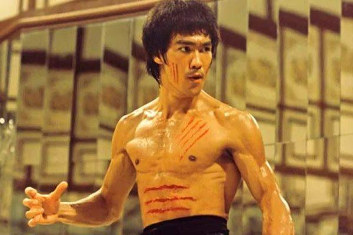

| AÑO | PELÍCULA | LOCACIÓN | ACTORES PRINCIPALES |
|---|---|---|---|
| 1966 | The Green Hornet (Tv Series) | Estados Unidos |
|
| 1971 | The Big Boss | Tailandia |
|
| 1972 | Fist of Fury | Hong Kong |
|
| 1972 | Return of the Dragon | Roma |
|
| 1973 | Enter the Dragon | Hong Kong |
|
| 1978 | Game of Death | Corea del Sur |
|
| Fuente: Filmaffinity | |||
Filmografía
A continuación un listado de las películas y series de Bruce Lee con su respectivo año
The Green Hornet - Serie
Serie de TV (1966-1967). 26 episodios. Un intrépido editor periodístico (Gordon Jones) se lanza en una cruzada personal contra el crimen y la delincuencia, a través del disfraz de "el Avispón Verde" y acompañado de su inseparable chofer Kato (Bruce Lee). Serie de televisión que es recordada por la aparición de Bruce Lee en uno de los papeles principales.
Derivó en varios telefilms y en 2011 Michel Gondry dirigió una nueva película para cines, protagonizada por Seth Rogen, Jay Chou y Christoph Waltz entre otros.
The Big Boss
Cheng (Bruce Lee) llega a Bangkok desde China habiendo prometido a su madre que no se metería en peleas. Al llegar, encuentra trabajo en la fábrica del Sr. Mi, pero descubre que es en realidad una tapadera para encubrir el tráfico de drogas y la prostitución. Dos obreros desaparecen misteriosamente y los restantes trabajadores deciden hacer huelga. La dirección envía contra ellos a hombres armados, y es cuando Cheng decide intervenir revelando su maestría en las artes marciales y haciendo que triunfen los obreros. Entonces, el Sr. Mi nombra capataz a Cheng y da una fiesta en su honor, pero cuando éste descubre las verdaderas intenciones del jefe decide enfrentarse a él con todas sus consecuencias.
Fist of Fury
Chen Jeh (Bruce Lee) es un estudiante chino de artes marciales que al regresar a su escuela descubre que su maestro ha fallecido repentinamente, suceso que lo altera demasiado. Tras la insultante visita durante el funeral de los representantes de una escuela japonesa de artes marciales, Chen acude a darles una lección y hacerles tragar sus palabras. Los japoneses desatan una espiral de violencia contra los chinos. Decidido a vengar su muerte acabando con todos los responsables, Chen emprende una cruzada contra la escuela japonesa y su aliado ruso Petrov.
Return of the Dragon


Tang Lung (Bruce Lee), un campesino chino, llega a Roma para ayudar a Chen Ching-Hua (Nora Miao) en la atención de un restaurante chino, que está siendo amenazado por la mafia local. Pero luego de una de las visitas de los mafiosos, Tang se revela como un maestro de las artes marciales despachando a sus oponentes en cuestión de segundos. Como consecuencia, comienzan una serie de violentos ataques contra el personal del restaurante. La película culmina con la llamada "Pelea del Siglo" en el Coliseo Romano entre Bruce Lee y Chuck Norris, karateka estadounidense siete veces campeón del mundo.
Enter the Dragon

Hong Kong, años 70. El joven Lee es un miembro del templo Shaolin y experto de las artes marciales que es reclutado por los servicios de inteligencia británicos para infiltrarse en una operación de drogas, durante un torneo de combates promovido por el jefe de la mafia.
Fue la última película en la que Bruce Lee hizo aparición antes de morir el 20 de julio de 1973. La película fue estrenada el 26 de julio de 1973, seis días después del fallecimiento de Lee.
Game of Death
Esta película comenzó a rodarse entre finales de 1972 y principios de 1973, sin embargo, solo se han rodado 40 minutos y quedó inconclusa por la muerte de Bruce Lee. Años más tarde, en 1977 fue terminada por la Golden Harvest haciendo uso de dobles y montajes y de una parte del rodaje original. Y además de escenas de las anteriores películas en la carrera de Bruce Lee. Esta película se estrenó 5 años después del fallecimiento de Lee. En un final épico, Lee se enfrenta, uno tras otro, a diferentes adversarios con distintos estilos de lucha hasta encontrarse cara a cara con el enemigo final.